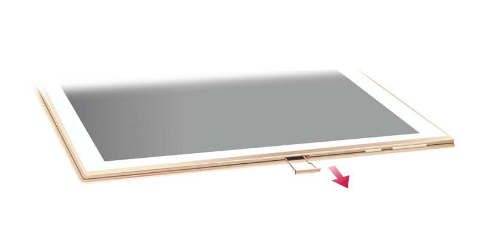

Copier des fichiers à partir d'un ordinateur
Des fichiers peuvent être copiés à partir d'un ordinateur de quatre façons :
- Les fichiers peuvent être copiés sur cet appareil à l'aide d'une connexion USB type-C.
- Les fichiers peuvent être envoyés via Bluetooth.
- Utiliser Internet.
- Utiliser une carte mémoire microSD.
Remarque
Les fichiers téléchargés peuvent être lus et édités à l'aide d'une application prenant en charge leur type de fichier.
Ex. : PDF : AdobeReader ; JPEG : Photo Gallery ; MP3 : Play Music ; Word/Excel : DocumentToGo
À l'aide d'une connexion USB
Veuillez lire“se connecter à l'aide d'un câble USB”.
Recevoir des fichiers via Bluetooth
1Le dispositif doit d'abord être synchronisé avec l'ordinateur à partir duquel les fichiers seront transférés.
Pour obtenir des instructions de configuration, veuillez lire"Configurer Bluetooth".
2Transférer des fichiers de l'ordinateur expéditeur en utilisant la fonction Bluetooth.
3Ce dispositif enverra une notification lors de la réception d'un fichier. Pour afficher la notification, ouvrez le panneau de notification en faisant glisser la partie supérieure gauche de l'écran vers le bas, puis sélectionnez la notification.
L'écran affiche une boîte vous demandant d'accepter le transfert.
4Sélectionnez «Accepter» pour recevoir les informations.
Transférer des fichiers en ligne.
Google Drive, Dropbox et d'autres services en ligne permettent aux utilisateurs de copier des fichiers (documents Word/Excel/PowerPoint, PDF, images, musique, etc.) à partir de leur ordinateur vers cet appareil en utilisant Internet.
1Télécharger les applications Google Drive ou Dropbox via Play Store.
2Télécharger des fichiers depuis votre ordinateur.
3Télécharger les fichiers sur cet appareil en utilisant l'application.
Utiliser une carte mémoire microSD.
Cette machine est équipée d'un logement pour carte mémoire microSD.
Remarque
Les cartes mémoire microSD sont un achat supplémentaire optionnel.
Les cartes mémoire microSD peuvent servir de mémoire externe pour cet appareil (200GB au maximum), pour le transfert d'informations entre les ordinateurs, les appareils photo numériques et d'autres appareils.
*Ne prend pas en charge le format exFAT. Les formats pris en charge incluent FAT32/NTFS. Si cet appareil peut lire les fichiers au format NTFS (limité aux fichiers et dossiers sauvegardés en utilisant des chiffres anglais/arabe), les fichiers ne peuvent cependant pas être édités. Les fichiers au format FAT32 peuvent être édités (les noms de fichiers et dossiers affichent normalement les caractères non alphabétiques).
Installation
Installation
1Insérez l'outil éjecteur de carte dans le trou à côté du plateau de la carte SIM, jusqu'à ce que le plateau se libère. Tirez ensuite le plateau vers l'extérieur.
2Assurez-vous que la carte microSD est placée dans la bonne direction.
3Poussez le plateau de la carte dans le KALOS 2, jusqu'à ce qu'il soit bien en place.
Assurez-vous que le couvercle de protection est fermé, sans aucune fissure.

Retrait
Retrait
1Insérez l'outil éjecteur de carte dans le trou à côté du plateau de la carte SIM, jusqu'à ce que le plateau se libère. Tirez ensuite le plateau vers l'extérieur.
2Une fois retirée la carte microSD, poussez le plateau de la carte dans le KALOS 2, jusqu'à ce qu'il soit bien en place.
Remarque
Ne pas retirer la carte microSD pendant qu'il est en train d'écrire ou de lire des informations.